Avarenne Wiki · Galleria generale Fazioni e conoscenza — integrazione illustrata Dodici illustrazioni di contesto, sei immagini di correnti già esistenti e uno schema del First Testament. Le immagini non assegnano poteri, oggetti o sviluppi futuri.
The Glass Hunt — illustrazione di contesto; non un emblema esposto o una scena futura già avvenuta The Ashen Tithe — illustrazione di contesto; non un emblema esposto o una scena futura già avvenuta 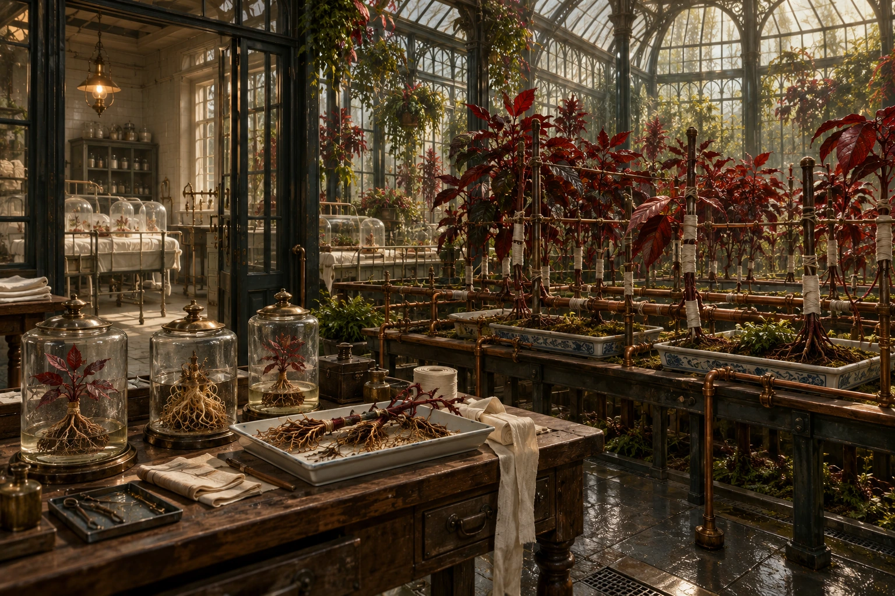
The Red Orchard — illustrazione di contesto; non un emblema esposto o una scena futura già avvenuta The Still Court — illustrazione di contesto; non un emblema esposto o una scena futura già avvenuta 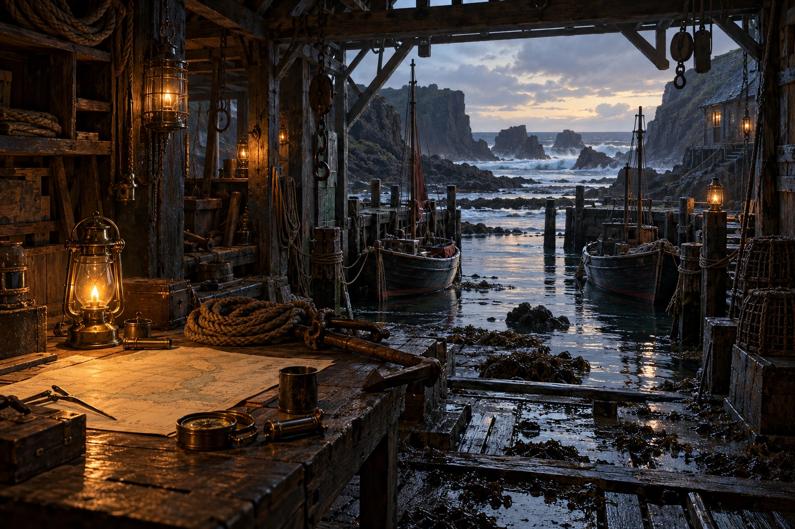
The Black Wake — illustrazione di contesto; non un emblema esposto o una scena futura già avvenuta 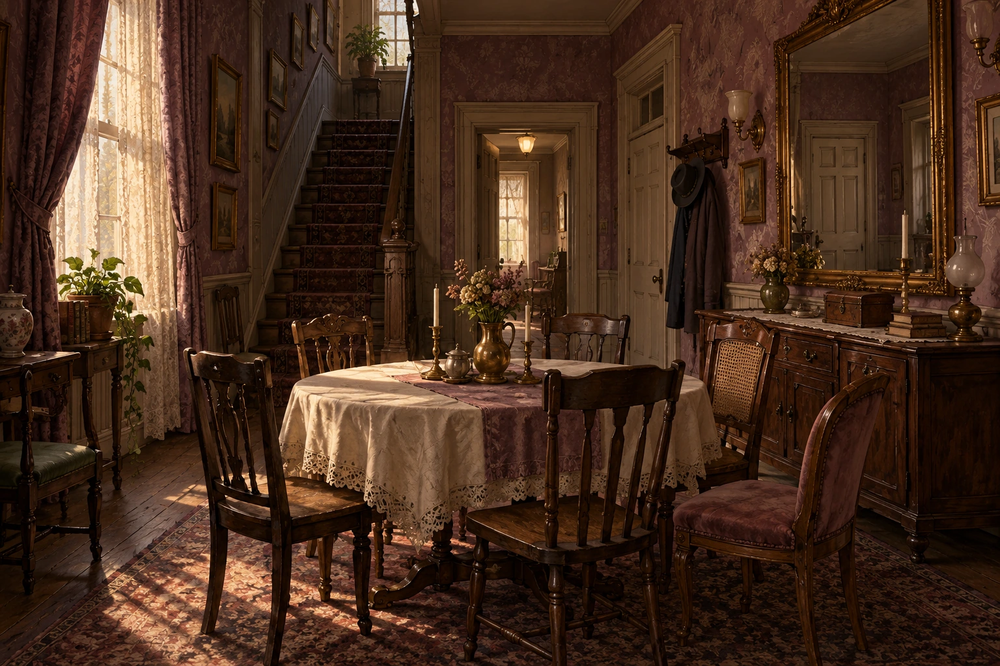
The Hollow Choir — illustrazione di contesto; non un emblema esposto o una scena futura già avvenuta The Ninth Cinder — illustrazione di contesto; non un emblema esposto o una scena futura già avvenuta 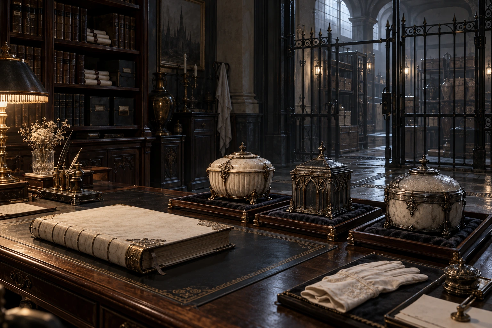
The Pale Ledger — illustrazione di contesto; non un emblema esposto o una scena futura già avvenuta 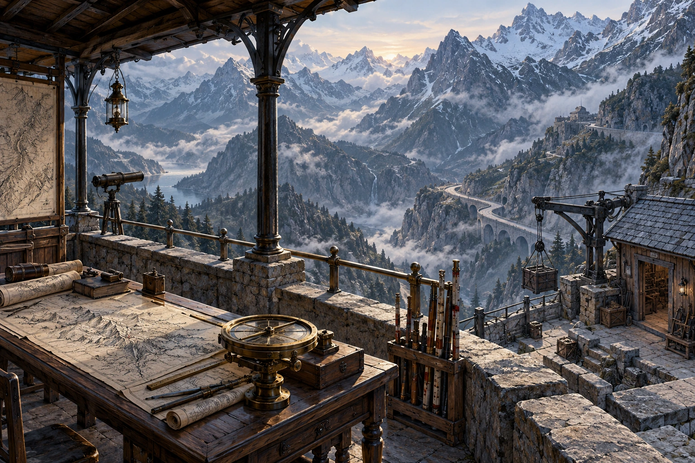
The Severed Compass — illustrazione di contesto; non un emblema esposto o una scena futura già avvenuta The Last Vessel — illustrazione di contesto; non un emblema esposto o una scena futura già avvenuta 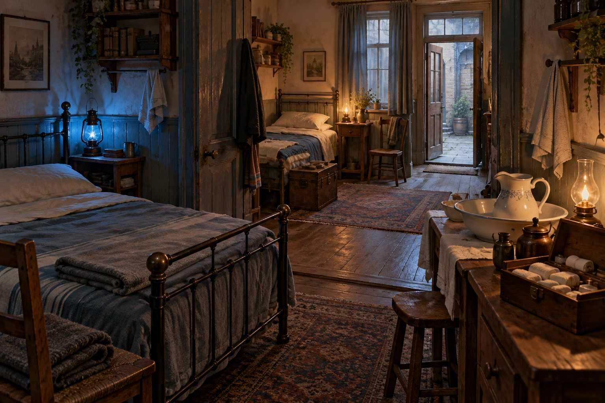
The Blue Lantern — illustrazione di contesto; non un emblema esposto o una scena futura già avvenuta The Broken Seal — illustrazione di contesto; non un emblema esposto o una scena futura già avvenuta The Shore Companies Segni delle correnti Le immagini seguenti appartengono alle singole correnti: non costituiscono un emblema universale dell’intera comunità.
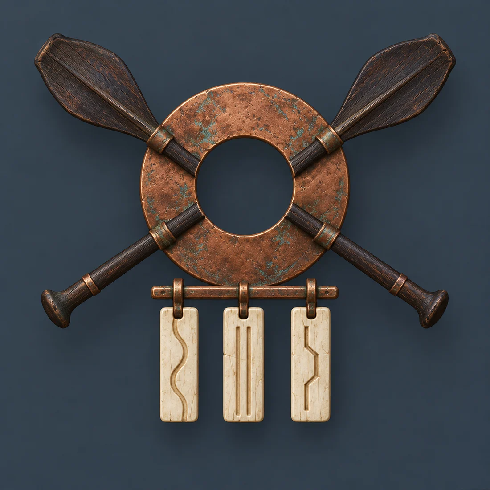
Witnessing Oars — segno della corrente, non dell’intera organizzazione 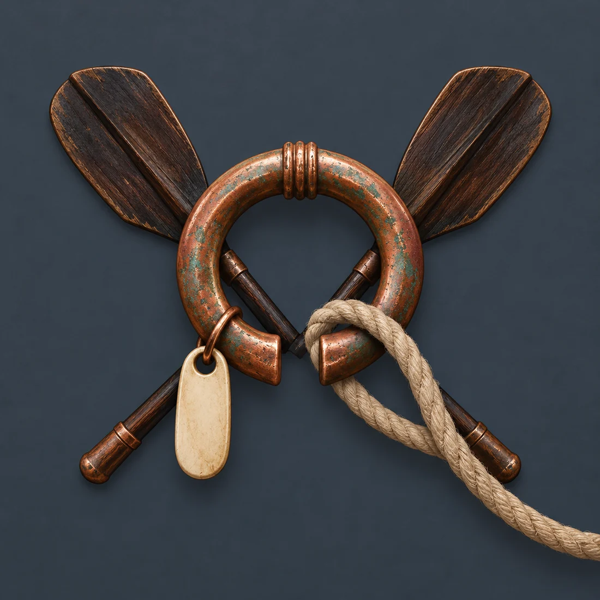
Open Moorings — segno della corrente, non dell’intera organizzazione Last Dawn Brethren — segno della corrente, non dell’intera organizzazione The Keepers of Namar Segni delle correnti Le immagini seguenti appartengono alle singole correnti: non costituiscono un emblema universale dell’intera comunità.
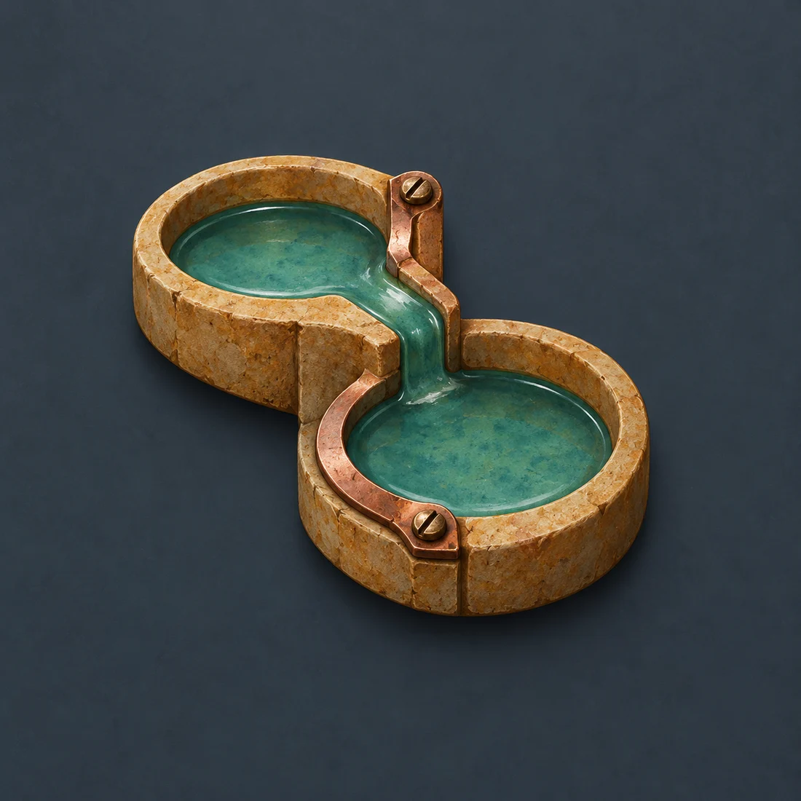
First Separation Keepers — segno della corrente, non dell’intera organizzazione 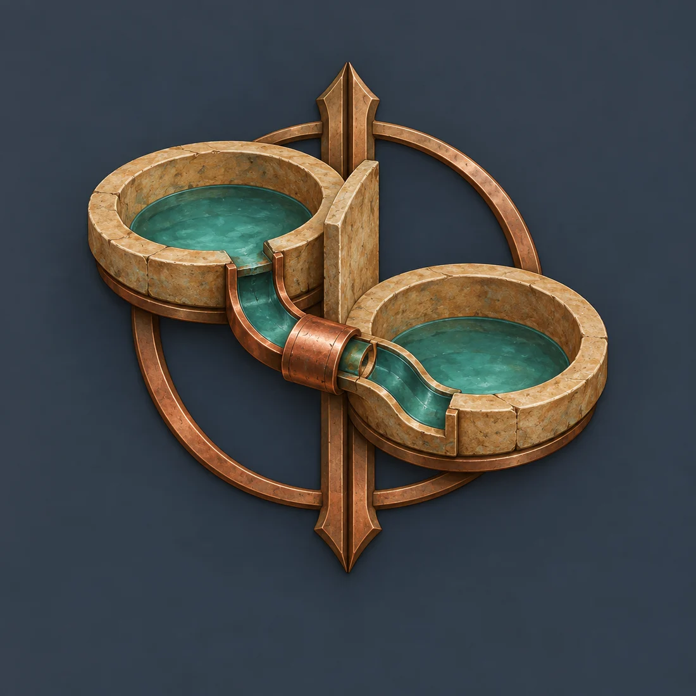
Renewal Stewards — segno della corrente, non dell’intera organizzazione 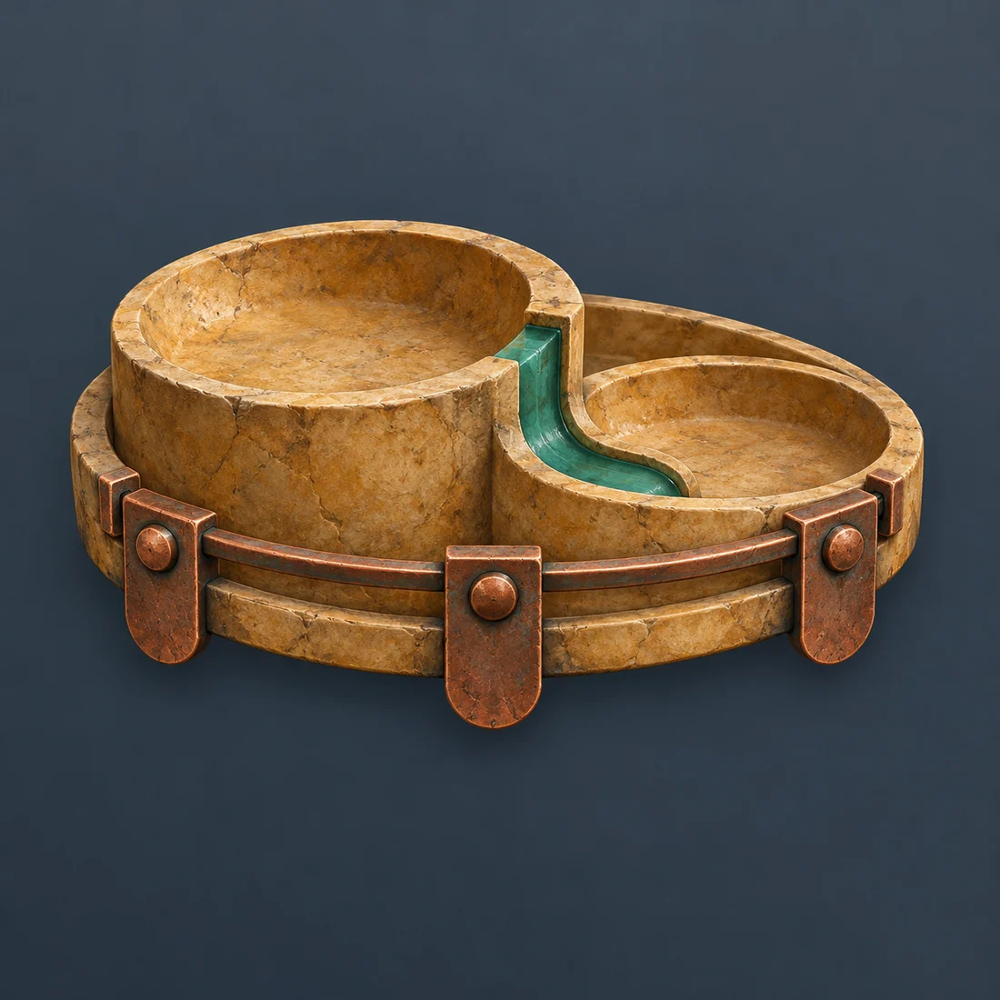
Free Basin Assembly — segno della corrente, non dell’intera organizzazione The First Testament 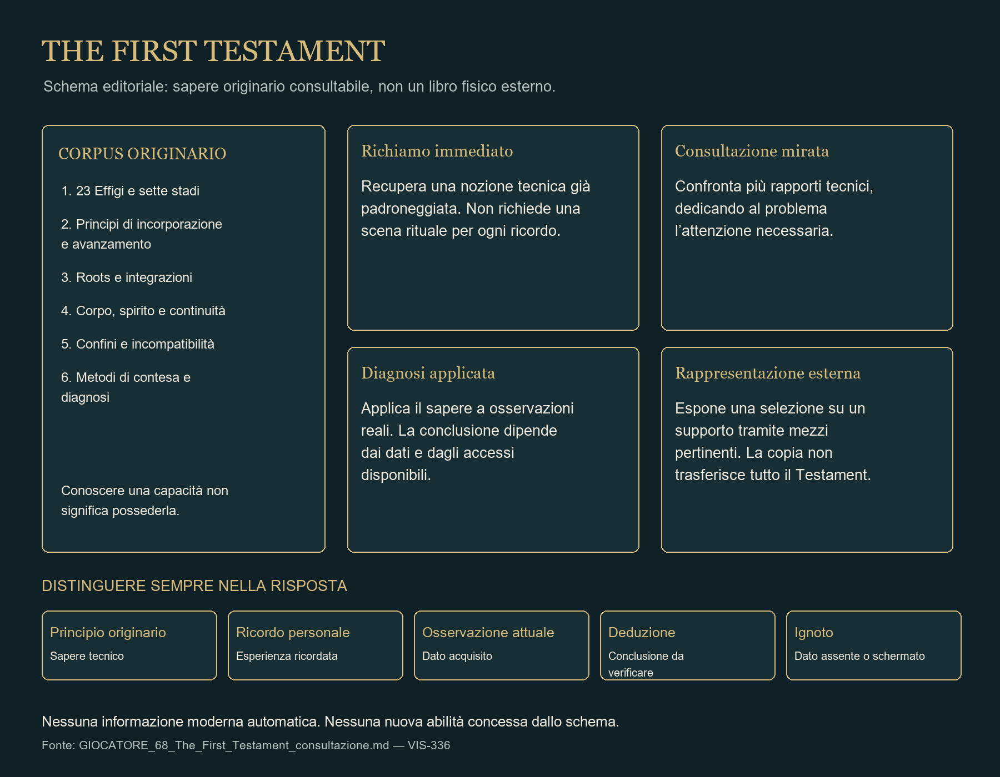
The First Testament — schema editoriale delle conoscenze e della consultazione; non un oggetto esterno o nuove abilità